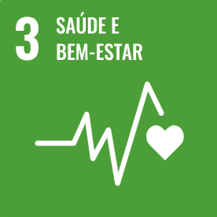
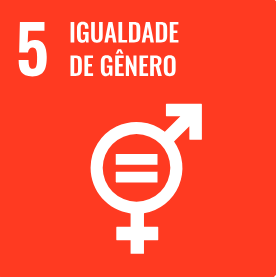
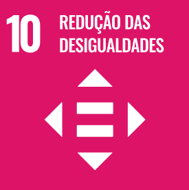

O SPFC apoia o objetivo “Saúde e Bem-Estar” da ONU promovendo atividades físicas, campanhas de saúde, programas de bem-estar para a comunidade e apoiando iniciativas de saúde pública. Essas ações contribuem para uma vida saudável e o bem-estar de todos.

O São Paulo Futebol Clube pode promover a igualdade de gênero, um dos Objetivos de Desenvolvimento Sustentável da ONU, por meio de iniciativas como investir no futebol feminino, realizar campanhas de conscientização sobre a igualdade de gênero, colaborar com organizações dedicadas a esse tema e implementar políticas internas que garantam oportunidades iguais para todos. Essas ações ajudam a criar um ambiente mais inclusivo e equitativo no esporte e na sociedade.

O São Paulo Futebol Clube contribui para a redução de desigualdades, um objetivo da ONU, por meio de
iniciativas que promovem inclusão social e igualdade, como escolinhas de futebol para jovens
carentes, projetos educacionais, campanhas contra discriminação e políticas de igualdade de
oportunidades no clube. Essas ações visam empoderar e promover a inclusão de todos na sociedade.
